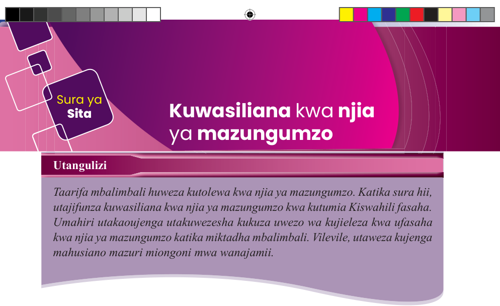
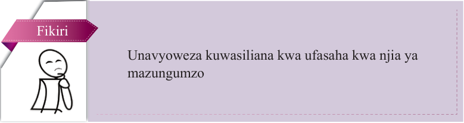

Sura ya Sita
Kuwasiliana kwa njia ya mazungumzo
Utangulizi
Taarifa mbalimbali huweza kutolewa kwa njia ya mazungumzo. Katika sura hii, utajifunza kuwasiliana kwa njia ya mazungumzo kwa kutumia Kiswahili fasaha. Umahiri utakaoujenga utakuwezesha kukuza uwezo wa kujieleza kwa ufasaha kwa njia ya mazungumzo katika miktadha mbalimbali. Vilevile, utaweza kujenga mahusiano mazuri miongoni mwa wanajamii.

Fikiri
Unavyoweza kuwasiliana kwa ufasaha kwa njia ya mazungumzo
Kuzungumza kwa ufasaha katika miktadha mbalimbali

Soma na mwenzako dayolojia ifuatayo, kisha jibu maswali yanayofuata.
Daktari: Habari ya leo? (Anamsabahi kwa uchangamfu.)
Mashaka: Nzuri! (Anaitikia salamu kwa unyonge.)
Daktari: Karibu nikuhudumie! Unaonekana mnyonge na mwenye mawazo sana. Kulikoni?
Mashaka: Ninaumwa sana daktari. Kifua kinaniuma na ninakosa hamu ya kula; na kila ikifika jioni, ninapatwa na homa kali inayoambatana na jasho jingi.
Daktari: Pole sana! Nitakuandikia vipimo vya kwenda maabara na utafanya eksirei. Majibu ya vipimo yakitoka utarudi chumba namba nane.
Mashaka: Sawa daktari. (Anaelekea maabara kupima vipimo alivyoagizwa na daktari.)